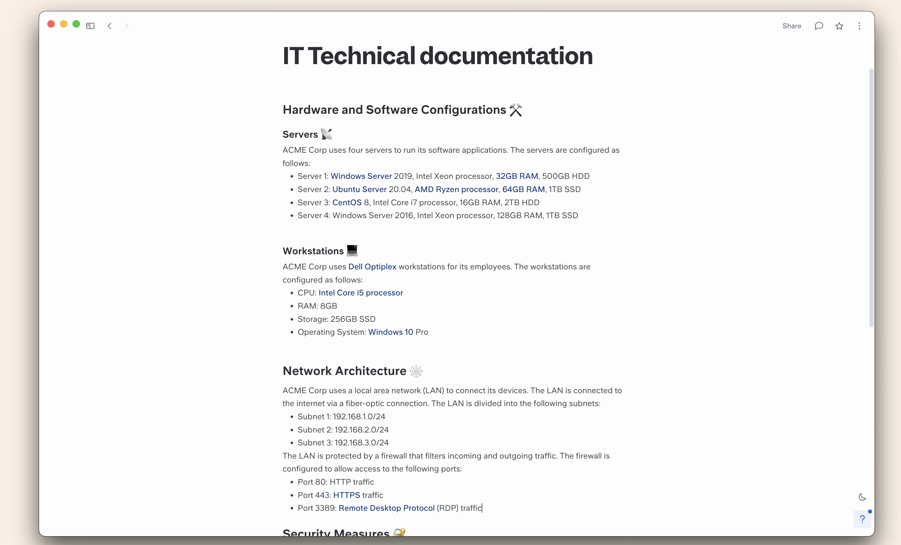

Ian Caldewell, a self-styled 'PC tinkerer', refurbishes
PCs, and has ways of acquiring modems, monitors, CPUs,
boxes and RAM - to the point where it has become a
pastime consuming most of his leisure time. He now has
streams of people seeking repairs, advice and
assistance. "Recently, I replaced an old power supply
for a couple, and, when they came to collect, they asked
whether I made house calls. I said I could and asked
what they needed." The lady told Caldewell she'd bought
a new wireless mouse, and, since it was the last one on
display, it didn't come with a box or instructions. "I
asked her: 'Did you put batteries in it?!' She hadn't,
of course."
Heading

MAKE MY DAY, PC
Chris Aitken, a designer and programmer from Camden,
NSW, believes his story proves that tech support is one
of the most stressful jobs on earth. He recalls working
for a small internet provider in the late '90s, when one
of the customers was a local police officer. "He was
also an expert in crashing Windows 98. On one occasion,
he brought his tower into the office, sat it on the
counter, pulled his service pistol out of his holster
and pointed it straight at the tower, threatening to
shoot it. Another time he put his (by now very nervous)
PC tower onto the counter, again took out his pistol,
held it by the barrel and started banging the butt of
the gun onto the top of the computer, quite hard too.
It's no wonder techies go grey - or bald - early!" This
is the first we've heard of someone trying to fix a
computer by intimidating it.